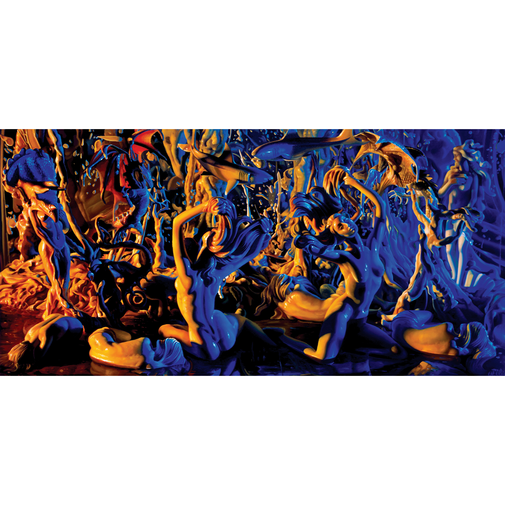
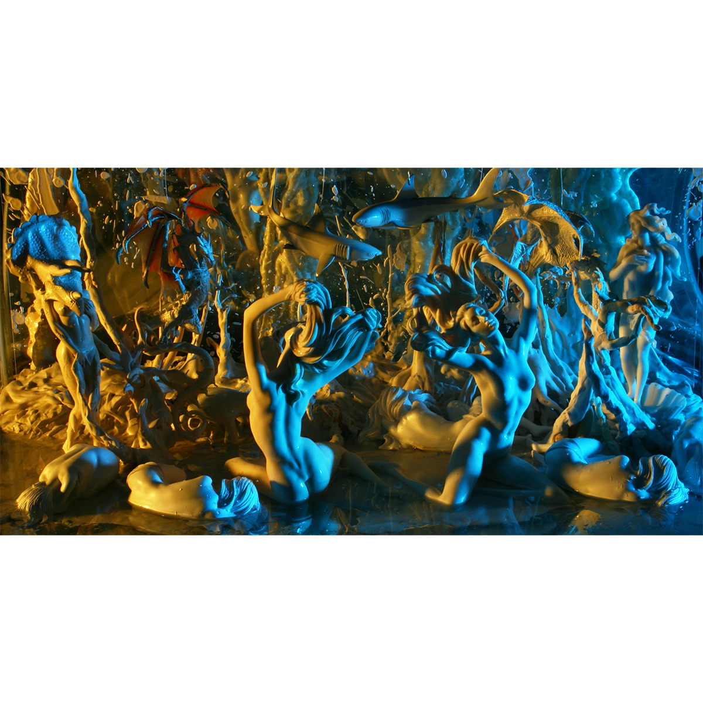

Literature
Ron English, Abject Expressionism: The Art of Ron English (San Francisco: Last Gasp, 2007), p.154. ISBN 978-0867196894.
Ron English, Fauxlosophy: The Art of Ron English (San Francisco: Last Gasp, 2008), p. 62. ISBN 978-0867196566.
Ron English, Original Grin: The Art of Ron English (Paris: Cernunnos, 2019), p. 364. ISBN 978-2374950938.
Notes
In Original Grin, this work was erroneously reported as 36x52 inches, with year 2010.
